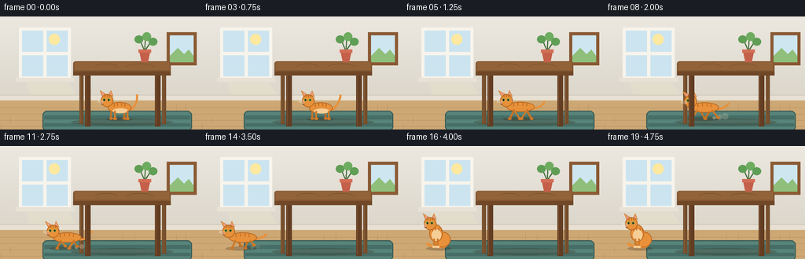
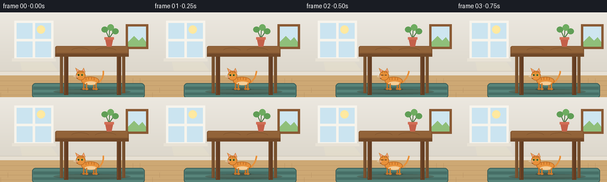

CODING AGENTS AS PIXEL WORLD MODELS
traex/Seed-2.1-Pro-0915 · dynamic_spatial_relationship_0015
点击播放 · 原生 RGB 像素
逐轮保存的候选
回放视频、检查图与代码变化。
每份候选均可单独播放。实际图片检查记录在下方工具轨迹中。
候选 01播放与检查图
点击播放 · 原生 RGB 像素


展开代码变化
--- 上一保存版本
+++ 本次保存版本
@@ -0,0 +1,397 @@
+"""Procedural text-to-video generator.
+
+Scene (flat cartoon, static camera): an orange cat idles under a wooden
+table, then runs out from beneath it and sits to the left of the table.
+
+Renders at 3x supersampling and downsamples with LANCZOS to 256x144.
+"""
+import math
+from pathlib import Path
+
+import numpy as np
+from PIL import Image, ImageDraw
+
+import artifact_io
+
+W, H, N, FPS = 256, 144, 20, 4.0
+SS = 3
+
+CASE_DIR = Path(__file__).parent
+
+
+class Canvas:
+ """Draw helpers that accept coordinates in the base 256x144 space."""
+
+ def __init__(self, img):
+ self.img = img
+ self.d = ImageDraw.Draw(img)
+
+ @staticmethod
+ def _pts(points):
+ return [(int(round(x * SS)), int(round(y * SS))) for x, y in points]
+
+ @staticmethod
+ def _box(box):
+ return tuple(int(round(v * SS)) for v in box)
+
+ @staticmethod
+ def _w(width):
+ return max(1, int(round(width * SS)))
+
+ def ellipse(self, box, fill, outline=None, width=1):
+ self.d.ellipse(self._box(box), fill=fill, outline=outline,
+ width=self._w(width))
+
+ def rectangle(self, box, fill, outline=None, width=1):
+ self.d.rectangle(self._box(box), fill=fill, outline=outline,
+ width=self._w(width))
+
+ def rounded(self, box, radius, fill, outline=None, width=1):
+ self.d.rounded_rectangle(self._box(box), radius=radius * SS,
+ fill=fill, outline=outline,
+ width=self._w(width))
+
+ def polygon(self, points, fill, outline=None):
+ self.d.polygon(self._pts(points), fill=fill, outline=outline)
+
+ def line(self, points, fill, width=1, joint="curve"):
+ self.d.line(self._pts(points), fill=fill, width=self._w(width),
+ joint=joint)
+
+ def arc(self, box, start, end, fill, width=1):
+ self.d.arc(self._box(box), start, end, fill=fill,
+ width=self._w(width))
+
+
+def bezier(p0, p1, p2, steps=14):
+ pts = []
+ for i in range(steps + 1):
+ t = i / steps
+ x = (1 - t) ** 2 * p0[0] + 2 * (1 - t) * t * p1[0] + t ** 2 * p2[0]
+ y = (1 - t) ** 2 * p0[1] + 2 * (1 - t) * t * p1[1] + t ** 2 * p2[1]
+ pts.append((x, y))
+ return pts
+
+
+WALL_TOP = (236, 232, 224)
+WALL_BOTTOM = (214, 208, 195)
+FLOOR = (205, 168, 116)
+PLANK = (188, 150, 102)
+RUG = (87, 132, 122)
+RUG_STRIPE = (70, 110, 102)
+RUG_EDGE = (58, 92, 86)
+CAT = (232, 145, 58)
+CAT_DARK = (206, 122, 42)
+CAT_FAR = (196, 114, 40)
+CAT_STRIPE = (186, 104, 33)
+CREAM = (245, 205, 150)
+
+
+def vertical_gradient(size, top, bottom):
+ h, w = size
+ arr = np.zeros((h, w, 3), dtype=np.float32)
+ for y in range(h):
+ t = y / max(1, h - 1)
+ arr[y, :, :] = [top[c] + (bottom[c] - top[c]) * t for c in range(3)]
+ return Image.fromarray(arr.astype(np.uint8))
+
+
+def build_background():
+ img = vertical_gradient((H * SS, W * SS), WALL_TOP,
+ WALL_BOTTOM).convert("RGBA")
+ c = Canvas(img)
+
+ # Window.
+ c.rectangle((24, 14, 90, 80), fill=(247, 244, 236))
+ c.rectangle((28, 18, 86, 76), fill=(203, 228, 240))
+ c.ellipse((62, 22, 76, 36), fill=(255, 233, 160))
+ c.rectangle((55, 18, 59, 76), fill=(247, 244, 236))
+ c.rectangle((28, 45, 86, 49), fill=(247, 244, 236))
+ c.rectangle((20, 78, 94, 83), fill=(232, 226, 214))
+
+ # Picture frame on the right wall.
+ c.rectangle((212, 20, 250, 62), fill=(138, 90, 52))
+ c.rectangle((216, 24, 246, 58), fill=(206, 230, 240))
+ c.polygon([(216, 50), (226, 40), (234, 48), (240, 42), (246, 50),
+ (246, 58), (216, 58)], fill=(143, 191, 122))
+
+ # Soft sunlight falling from the window.
+ sun = Image.new("RGBA", img.size, (0, 0, 0, 0))
+ sd = ImageDraw.Draw(sun)
+ pts = [(int(34 * SS), int(84 * SS)), (int(86 * SS), int(84 * SS)),
+ (int(132 * SS), H * SS), (int(46 * SS), H * SS)]
+ sd.polygon(pts, fill=(255, 244, 196, 34))
+ img = Image.alpha_composite(img, sun)
+ c = Canvas(img)
+
+ # Baseboard.
+ c.rectangle((0, 100, 256, 107), fill=(231, 224, 211))
+ c.line([(0, 100), (256, 100)], fill=(208, 200, 186), width=1)
+
+ # Floor with planks.
+ c.rectangle((0, 107, 256, 144), fill=FLOOR)
+ for y in (116, 124, 132, 140):
+ c.line([(0, y), (256, y)], fill=PLANK, width=0.8)
+ rng = np.random.default_rng(7)
+ for y in (112, 120, 128, 136):
+ for x in rng.integers(0, 250, size=4):
+ c.line([(int(x), y), (int(x), y + 8)], fill=PLANK, width=0.7)
+
+ # Rug.
+ c.rounded((54, 120, 244, 146), 6, fill=RUG, outline=RUG_EDGE, width=1.2)
+ c.rectangle((56, 126, 242, 131), fill=RUG_STRIPE)
+ c.rectangle((56, 136, 242, 140), fill=RUG_STRIPE)
+
+ # Table shadow on the rug.
+ sh = Image.new("RGBA", img.size, (0, 0, 0, 0))
+ shd = ImageDraw.Draw(sh)
+ shd.ellipse(tuple(int(v * SS) for v in (90, 130, 220, 139)),
+ fill=(52, 36, 22, 60))
+ img = Image.alpha_composite(img, sh)
+ c = Canvas(img)
+
+ # Rear table legs (behind the cat).
+ for x0, x1 in ((101, 106), (206, 211)):
+ c.rectangle((x0, 70, x1, 137), fill=(116, 78, 45))
+ c.line([(x0 + 1, 72), (x0 + 1, 135)], fill=(140, 98, 58), width=0.8)
+
+ return img
+
+
+def build_foreground():
+ """Table top, front legs and the plant on top; composites over the cat."""
+ img = Image.new("RGBA", (W * SS, H * SS), (0, 0, 0, 0))
+ c = Canvas(img)
+
+ # Front legs.
+ for x0, x1 in ((108, 115), (197, 204)):
+ c.rectangle((x0, 70, x1, 140), fill=(99, 61, 34))
+ c.line([(x0 + 1.4, 72), (x0 + 1.4, 138)],
+ fill=(124, 80, 46), width=1)
+
+ # Table top with a darker front apron.
+ c.rounded((93, 57, 217, 75), 3, fill=(133, 88, 50))
+ c.rectangle((95, 58, 215, 68), fill=(146, 99, 57))
+ c.rectangle((93, 70, 217, 75), fill=(112, 72, 40))
+ c.arc((120, 60, 150, 70), 190, 350, fill=(122, 80, 45), width=0.8)
+ c.arc((160, 60, 196, 70), 190, 350, fill=(122, 80, 45), width=0.8)
+
+ # Potted plant on the table.
+ c.line([(184, 44), (178, 30)], fill=(66, 110, 60), width=1.2)
+ c.line([(184, 44), (185, 28)], fill=(66, 110, 60), width=1.2)
+ c.line([(184, 44), (192, 32)], fill=(66, 110, 60), width=1.2)
+ c.ellipse((171, 24, 182, 34), fill=(96, 158, 86))
+ c.ellipse((181, 20, 192, 31), fill=(110, 172, 96))
+ c.ellipse((189, 27, 200, 37), fill=(96, 158, 86))
+ c.polygon([(177, 44), (191, 44), (188, 58), (180, 58)],
+ fill=(196, 96, 74))
+ c.rectangle((176, 42, 192, 46), fill=(210, 110, 86))
+ return img
+
+
+def draw_leg(c, ax, ay, fx, fy, color):
+ c.line([(ax, ay), (fx, fy)], fill=color, width=2.4)
+ c.ellipse((fx - 2.2, fy - 1.6, fx + 2.6, fy + 1.8), fill=color)
+
+
+def cat_head(c, hx, hy, ear_shift=0, blink=False):
+ # Ears.
+ c.polygon([(hx - 6, hy - 5), (hx - 9 + ear_shift, hy - 13),
+ (hx - 1, hy - 8)], fill=CAT, outline=CAT_STRIPE)
+ c.polygon([(hx + 2, hy - 8), (hx + 5 + ear_shift, hy - 13),
+ (hx + 8, hy - 5)], fill=CAT, outline=CAT_STRIPE)
+ c.polygon([(hx - 5.2, hy - 6.4), (hx - 6.8 + ear_shift, hy - 11),
+ (hx - 2.6, hy - 8)], fill=(232, 158, 142))
+ c.polygon([(hx + 3, hy - 8.2), (hx + 4.6 + ear_shift, hy - 11),
+ (hx + 6.4, hy - 6.6)], fill=(232, 158, 142))
+ # Head.
+ c.ellipse((hx - 8, hy - 8, hx + 8, hy + 8), fill=CAT,
+ outline=CAT_STRIPE, width=1)
+ # Crown stripes.
+ c.line([(hx - 3, hy - 8), (hx - 3, hy - 4.5)],
+ fill=CAT_STRIPE, width=1)
+ c.line([(hx + 0.2, hy - 8.2), (hx + 0.2, hy - 4.6)],
+ fill=CAT_STRIPE, width=1)
+ c.line([(hx + 3.2, hy - 7.6), (hx + 3, hy - 4.4)],
+ fill=CAT_STRIPE, width=1)
+ # Face (facing left).
+ if blink:
+ c.line([(hx - 5.5, hy - 1), (hx - 1.5, hy - 1)],
+ fill=(60, 44, 30), width=1)
+ c.line([(hx + 1, hy - 1), (hx + 4, hy - 1)],
+ fill=(60, 44, 30), width=1)
+ else:
+ for ex in (-3.6, 2.2):
+ c.ellipse((hx + ex - 1.7, hy - 2.6,
+ hx + ex + 1.7, hy + 0.8), fill=(122, 170, 74))
+ c.ellipse((hx + ex - 0.9, hy - 1.9,
+ hx + ex + 0.9, hy + 0.2), fill=(38, 30, 22))
+ c.polygon([(hx - 7.4, hy + 1.6), (hx - 5.2, hy + 1.6),
+ (hx - 6.3, hy + 3.2)], fill=(210, 102, 102))
+ c.arc((hx - 8.4, hy + 1.6, hx - 4.4, hy + 5), 20, 120,
+ fill=(120, 70, 40), width=0.8)
+ for wy in (0.6, 2.4, 4.2):
+ c.line([(hx - 5, hy + wy * 0.8),
+ (hx - 12, hy - 1 + wy * 0.7)],
+ fill=(247, 236, 220), width=0.7)
+
+
+def body_stripes(c, cx, cy, length, height):
+ for t in (-0.55, -0.2, 0.18, 0.5):
+ sx = cx + t * length
+ ytop = cy - height * math.sqrt(max(0.0, 1 - t * t))
+ c.line([(sx, ytop + 0.6), (sx, ytop + 4.2)],
+ fill=CAT_STRIPE, width=1.1)
+
+
+def draw_cat(frame, x, feet, pose, phase=0.0, blink=False):
+ c = Canvas(frame)
+
+ if pose == "sit":
+ # Tail curling around the front along the floor.
+ tail = bezier((x + 8, feet - 3), (x - 2, feet + 1),
+ (x - 15, feet - 4), 16)
+ c.line(tail, fill=CAT, width=3)
+ c.ellipse((x - 18, feet - 7, x - 13.5, feet - 2.5), fill=CAT)
+ # Haunch and chest.
+ c.ellipse((x - 9, feet - 21, x + 13, feet - 1),
+ fill=CAT, outline=CAT_STRIPE, width=1)
+ c.ellipse((x - 14, feet - 30, x + 3, feet - 8),
+ fill=CAT, outline=CAT_STRIPE, width=1)
+ c.ellipse((x - 11, feet - 24, x + 1, feet - 9), fill=CREAM)
+ body_stripes(c, x - 4, feet - 19, 11, 8)
+ # Front paws.
+ c.line([(x - 8, feet - 12), (x - 8, feet - 1)],
+ fill=CAT_DARK, width=2.4)
+ c.line([(x - 3.5, feet - 12), (x - 3.5, feet - 1)],
+ fill=CAT_DARK, width=2.4)
+ c.ellipse((x - 10.4, feet - 3, x - 5.6, feet - 0.4), fill=CREAM)
+ c.ellipse((x - 5.9, feet - 3, x - 1.1, feet - 0.4), fill=CREAM)
+ cat_head(c, x - 13, feet - 31, blink=blink)
+ return
+
+ if pose == "crouch":
+ cy = feet - 9
+ tail = bezier((x + 16, cy + 2), (x + 27, cy + 4),
+ (x + 30, cy - 6), 16)
+ c.line(tail, fill=CAT, width=3)
+ for ox, col in ((-12, CAT_FAR), (9, CAT_FAR)):
+ draw_leg(c, x + ox, cy + 3, x + ox + 3, feet - 2, col)
+ c.ellipse((x - 18, cy - 6, x + 16, cy + 8),
+ fill=CAT, outline=CAT_STRIPE, width=1)
+ body_stripes(c, x - 1, cy, 15, 6)
+ for ox, col in ((-8, CAT), (5, CAT)):
+ draw_leg(c, x + ox, cy + 4, x + ox - 2, feet, col)
+ cat_head(c, x - 18, cy - 4, ear_shift=-1.5, blink=blink)
+ return
+
+ if pose == "run":
+ bob = 1.6 * math.sin(phase * 2)
+ cy = feet - 15 + bob
+ # Tail streams backward and sways.
+ sway = 3 * math.sin(phase)
+ tail = bezier((x + 15, cy + 2), (x + 26, cy + 2 + sway),
+ (x + 31, cy - 7 - sway), 16)
+ c.line(tail, fill=CAT, width=2.8)
+ # Far-side legs.
+ for ox, ph in ((-7, phase + math.pi), (7, phase)):
+ fx = x + ox + 7 * math.cos(ph)
+ fy = feet - 4 * max(0.0, math.sin(ph))
+ draw_leg(c, x + ox, cy + 3, fx, fy, CAT_FAR)
+ c.ellipse((x - 18, cy - 6.5, x + 18, cy + 6.5),
+ fill=CAT, outline=CAT_STRIPE, width=1)
+ body_stripes(c, x, cy, 16, 6)
+ # Near-side legs.
+ for ox, ph in ((-9, phase), (9, phase + math.pi)):
+ fx = x + ox + 8 * math.cos(ph)
+ fy = feet - 5 * max(0.0, math.sin(ph))
+ draw_leg(c, x + ox, cy + 3, fx, fy, CAT_DARK)
+ cat_head(c, x - 18, cy - 8, ear_shift=-1.2)
+ return
+
+ # Idle standing pose with gentle breathing.
+ breathe = 0.4 * math.sin(phase)
+ cy = feet - 14 + breathe
+ tail_sway = 4 * math.sin(phase * 0.8)
+ tail = bezier((x + 14, cy + 3), (x + 24, cy - 5),
+ (x + 22 + tail_sway, cy - 17), 16)
+ c.line(tail, fill=CAT, width=2.8)
+ for ox in (-11, 6):
+ draw_leg(c, x + ox, cy + 4, x + ox, feet - 0.5, CAT_FAR)
+ c.ellipse((x - 15, cy - 7, x + 15, cy + 7),
+ fill=CAT, outline=CAT_STRIPE, width=1)
+ c.ellipse((x - 9, cy + 1, x + 11, cy + 7), fill=CREAM)
+ body_stripes(c, x, cy, 13, 6.5)
+ for ox in (-6, 10):
+ draw_leg(c, x + ox, cy + 4, x + ox, feet, CAT_DARK)
+ cat_head(c, x - 16, cy - 9, blink=blink)
+
+
+def cat_shadow(frame, x, feet, pose):
+ layer = Image.new("RGBA", frame.size, (0, 0, 0, 0))
+ d = ImageDraw.Draw(layer)
+ if pose == "sit":
+ box = (x - 18, feet - 2, x + 14, feet + 3)
+ elif pose == "run":
+ box = (x - 22, feet - 2, x + 18, feet + 3)
+ else:
+ box = (x - 17, feet - 2, x + 16, feet + 3)
+ d.ellipse(tuple(int(v * SS) for v in box), fill=(52, 36, 22, 66))
+ return Image.alpha_composite(frame, layer)
+
+
+def draw_dust(frame, x, feet, amount):
+ layer = Image.new("RGBA", frame.size, (0, 0, 0, 0))
+ d = ImageDraw.Draw(layer)
+ for k in range(3):
+ px = x + 12 + k * 7
+ py = feet - 1 - k
+ r = 2 + k
+ alpha = int(95 * amount) - k * 22
+ if alpha > 0:
+ d.ellipse((int((px - r) * SS), int((py - r) * SS),
+ int((px + r) * SS), int((py + r) * SS)),
+ fill=(232, 217, 188, alpha))
+ return Image.alpha_composite(frame, layer)
+
+
+def cat_state(i):
+ """Returns (x, feet, pose, phase)."""
+ if i <= 3:
+ return 152.0, 130.0, "idle", i * 0.9
+ if i == 4:
+ return 150.0, 130.0, "crouch", 0.0
+ if i <= 15:
+ u = (i - 5) / 10.0
+ smooth = u * u * (3 - 2 * u)
+ return 150.0 - 100.0 * smooth, 130.0, "run", (i - 5) * 1.15
+ return 48.0, 130.0, "sit", (i - 16) * 0.7
+
+
+def render():
+ bg = build_background()
+ fg = build_foreground()
+ frames = []
+ for i in range(N):
+ x, feet, pose, phase = cat_state(i)
+ frame = bg.copy()
+ frame = cat_shadow(frame, x, feet, pose)
+ if pose == "run" and 6 <= i <= 14:
+ frame = draw_dust(frame, x, feet, 1.0 if i < 13 else 0.5)
+ blink = (pose == "idle" and i == 2)
+ draw_cat(frame, x, feet, pose, phase=phase, blink=blink)
+ frame = Image.alpha_composite(frame, fg)
+ small = frame.convert("RGB").resize((W, H), Image.Resampling.LANCZOS)
+ frames.append(np.asarray(small, dtype=np.uint8))
+ return np.stack(frames, axis=0)
+
+
+def main():
+ frames = render()
+ assert frames.shape == (N, H, W, 3) and frames.dtype == np.uint8
+ artifact_io.save(frames, CASE_DIR)
+ print(f"Saved {N} frames ({W}x{H} @ {FPS} fps) to {CASE_DIR}")
+
+
+if __name__ == "__main__":
+ main()
可观测工具轨迹
实际执行的命令与返回图片。
命令 1exit 0
/bin/bash -lc 'cat prompt.txt; echo "-----"; cat GENERATION_RULES.md; echo "-----"; cat task_spec.json; echo "-----"; ls -la'
命令 2exit 0
/bin/bash -lc 'cat artifact_io.py'
命令 3exit 0
/bin/bash -lc 'cd . && python generate.py && ls -la'
命令 4exit 0
/bin/bash -lc "cd . && python - <<'EOF'
import numpy as np
from PIL import Image
def stats(i):
a = np.asarray(Image.open(f\"frames/{i:02d}.png\").convert(\"RGB\"))
r,g,b = a[...,0], a[...,1], a[...,2]
cat = (r>170)&(g>80)&(g<190)&(b<110)&(r-g>35)
ys,xs = np.where(cat)
# table wood (legs/top) brown
wood = (r>80)&(r<170)&(g>50)&(g<120)&(b<80)&(r-g>25)
wy,wx = np.where(wood)
return (xs.min(),xs.max(),ys.min(),ys.max(),cat.sum(),
wx.min(),wx.max())
for i in range(20):
x0,x1,y0,y1,n,tx0,tx1 = stats(i)
under = (x0>=100 and x1<=210 and y0>75)
left = x1 < tx0
tag = \"UNDER\" if under else (\"LEFT\" if left else \"moving\")
print(f\"f{i:02d} cat x[{x0:3d},{x1:3d}] y[{y0:3d},{y1:3d}] px={n:5d} | table x[{tx0},{tx1}] -> {tag}\")
EOF"保存候选 1 份；完成命令 4 次；可验证图片返回 0 张。原始 API 响应与完整日志保留在本地。